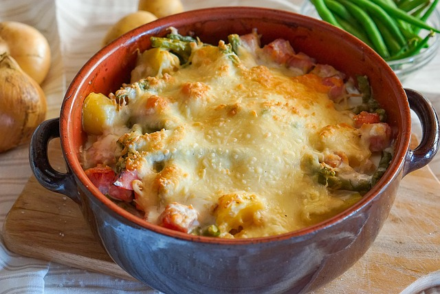

Cassolette de poireau, pomme de terre et champignon gratinée

Description
Ingrédients
- 1 pomme de terre de taille moyenne (ou 2 petites)
- 1 blanc de poireau (ou 2 petits)
- 1 echalotte
- 4 à 5 champignons de paris de taille moyenne (ou 6 petits, 2 gros) ou une portion de brocoli
- 1 grosse gousse d'ail
- 1 cuillere à soupe de farine
- 1 verre de bouillon de volaille
- 1 noix de beurre
- creme liquide
- jus de citron
- parmesan
- fromage rapé
- sel, poivre
Etapes
- Cuire la pomme de terre (et le brocoli si utilisé) coupée en petits morceaux (tester en rondelles à mettre au fond du plat) dans une petite casseole d'eau salée.
- Emincer le blanc de poireau, l'echalotte (et les champignons si utilisés), faire revenir le tout 10/15min dans une poele beurrée, poivrer et ajouter la gousse d'ail écrasée vers la fin.
- Toujours sur feu moyen/fort, parsemer de farine, mélanger puis déglacer avec le bouillon. Mélanger une premiere fois puis ajouter la creme liquide, le jus de citron et le parmesan. Bien mélanger.
- Verser cette preparation sur les pommes de terres (et brocoli si utilisés) disposées dans la cassolette. Ajouter du fromage rapé et faire gratiner au four préchauffé à 180° pendant 15min (assez haut dans le four pour aller plus vite, et sur grill pour les 5 dernieres minutes);
Home